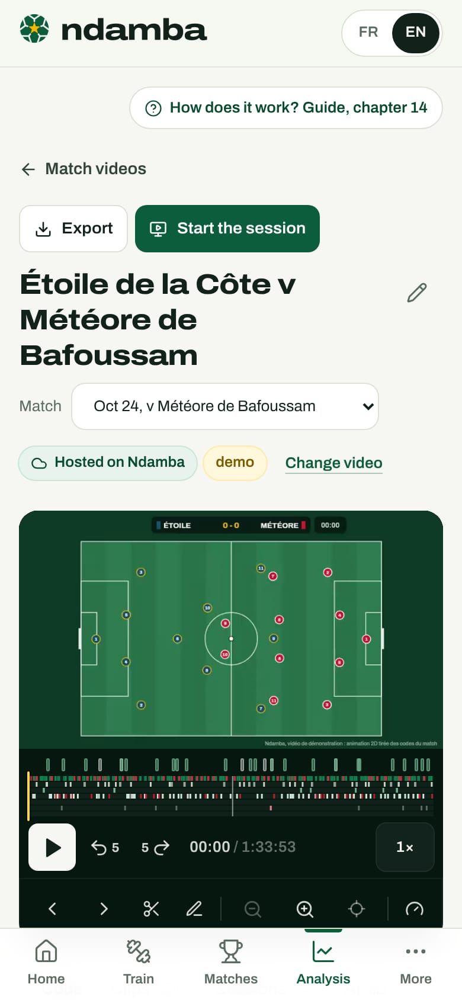
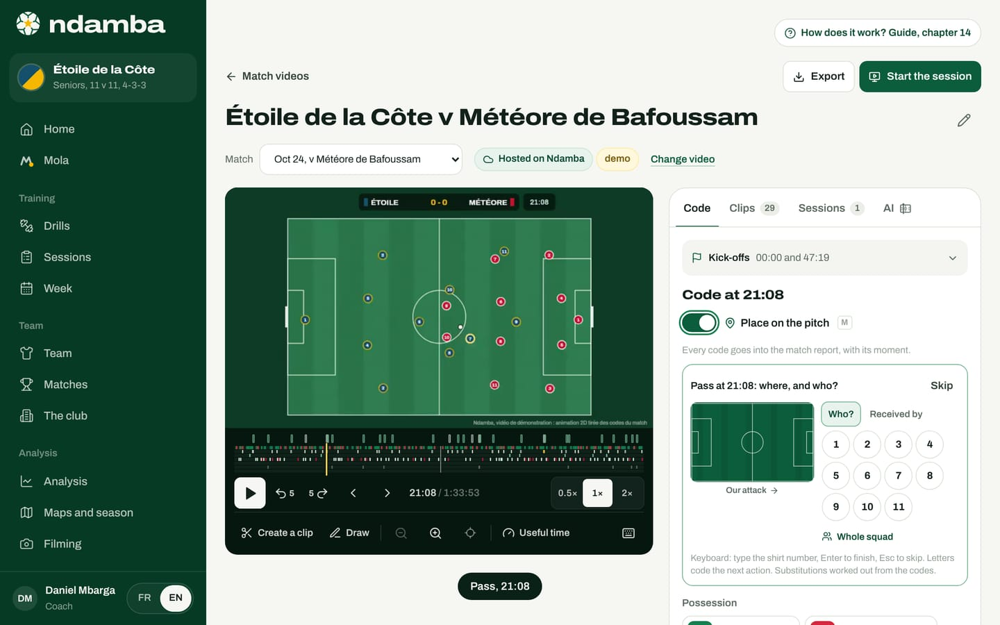
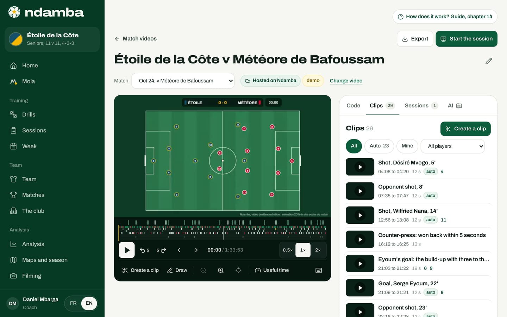
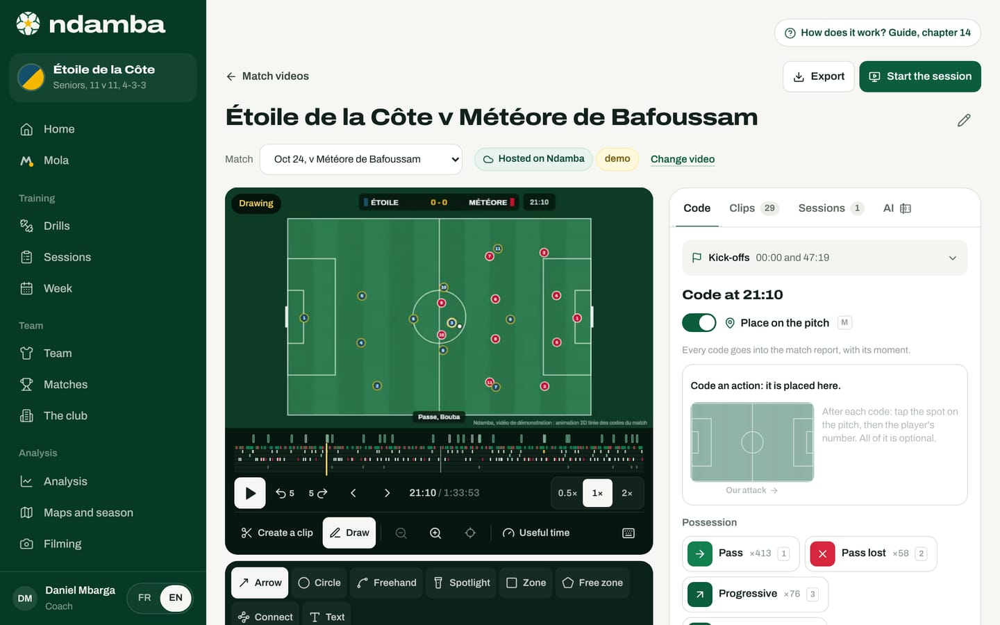
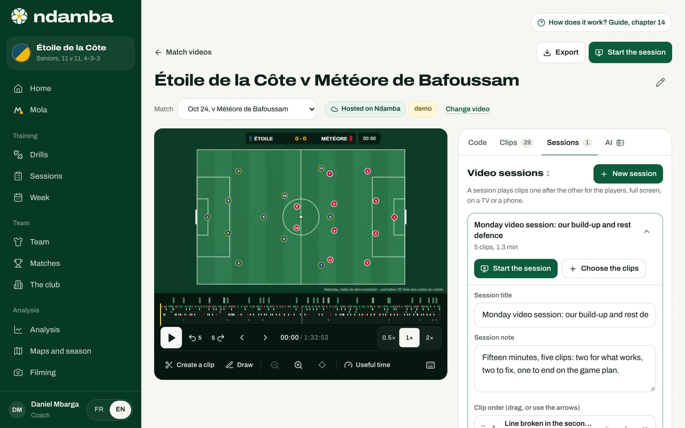
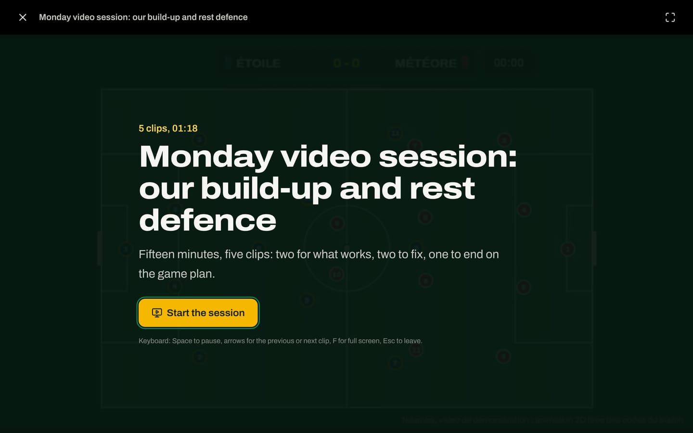

Video editing: clips, drawings, sessions
The video studio turned into an editing tool: the screen layout, the timeline and its lanes, coding with the place on the pitch, set pieces, clips (manual and automatic), drawing with eight tools, zoom, useful time, exporting a clip, the link to a moment, full-screen video sessions and the keyboard shortcuts. With a method: a fifteen-minute session, three to five clips, the positives first.
13 min read
Coding a match measures it. Showing it to the players changes it. In between lies a job that professional clubs give to a video analyst: picking the right moments, cutting them, drawing on them what needs to be seen, and playing them in front of the group. Ndamba’s studio does that job in the browser, on the same video and with the same codes as the report. This chapter walks through it with the pro club demo video, Étoile de la Côte v Météore de Bafoussam, hosted on Ndamba and coded action by action.
Chapter 14 explains how to open a video, mark the kick-offs and code; chapter 12, what each code means. This chapter starts from there.
The studio screen

On a computer, the screen has four areas.
The top bar. The Match videos link back to the list, Export (the analysis files) and Start the session when a video session exists. Below, the video title with its pencil (Rename the video), the Match menu that links the video to a match, or to No match (training, scouting), then where the video comes from and Change video.
The player. The picture, then the timeline, then the controls: Play and Pause, Back 5 s and Forward 5 s, Previous frame and Next frame, the time ("21:40 / 1:33:53"), and the speeds 0.5×, 1× and 2×. A row of tools follows: Create a clip, Draw, Zoom out and Zoom in, ball following, Useful time and, at the end, the keyboard that opens the Keyboard shortcuts.
The timeline. It carries the clips on top, then one thin lane per family of codes, in the colours of the buttons: possession, danger, fixation, transitions, set pieces, opponent and notes. Each coded action leaves a mark on it. The gold playhead shows where you are; tap or drag to move. While you make a clip, a Clip detail lane magnifies the clip’s area so you can set its ends to a tenth of a second.
The tool panel. Four tabs: Code, Clips (with their number, 29 in the demo), Sessions (1) and AI. Each has its own address (?panneau=coder, clips, seances or ia), handy for sending an assistant straight to the clips.
On a phone, the player stays stuck at the top and the panel scrolls underneath.


Where the video comes from
Four sources are possible, shown next to the Match menu: On YouTube, On Facebook, File: match.mp4 (a file opened on the device) and Hosted on Ndamba. A hosted video has been uploaded to Ndamba (chapter 31): it plays at once, on any device, without reopening a file. The demo video also carries the demo label: it is a 94-minute 2D animation drawn from the match codes and served by Ndamba, so every coded action can be seen on screen. If a hosted video does not load, the studio says so and offers Try again.
The tools do not work everywhere, because the YouTube and Facebook players do not let anyone capture or freely slow down their picture:
| File or hosted | YouTube | ||
|---|---|---|---|
| Code, place, clips, sessions | yes | yes | yes |
| Speeds 0.5× and 2× | yes | yes | no |
| Frame by frame, zoom | yes | no | no |
| Drawing on the picture | yes | no | no |
| Export a clip as a video | yes | no | no |
| Copy the link to a moment | no | yes, at the right moment | yes, at the start of the video |
Code with the place on the pitch
The Code tab opens with the Kick-offs ("00:00 and 47:19" in the demo): a folding strip with 1st half, 2nd half and Mark here (chapter 14). Then the heading Code at 21:40, which follows the video time, and the Place on the pitch switch (key M). The code lands at the moment the video shows; for a video linked to a match, "Every code goes into the match report, with its moment."


With Place on the pitch on, every code opens a panel: "Pass at 21:40: where, and who?".
- Tap the spot of the action on the mini-pitch. Our attack always goes left to right, whichever side was filmed.
- Under Who?, tap the player’s number. The panel offers the players on the pitch at that moment: the match starters, plus the substitutes from their first coded action ("Substitutions worked out from the codes"). Whole squad opens the full list.
- For a pass, move to Received by and tap the receiver. That is what draws the passing network (chapter 28).
- Done, or simply the next code. Skip carries on without placing.
The keyboard is faster: "type the shirt number, Enter to finish, Esc to skip. Letters code the next action." For an opponent’s action, only the spot is asked for. These positions and names feed the maps, the Players tab of the report and the recruitment profiles (chapter 27). They stay optional: a match coded without placing has its Index and its report, but no maps.
The code buttons follow, by family, each with its counter ("×412") and its key. Below them come two new blocks:
- Set pieces, "Counted apart, never in the Index": for us, Corner (C), Free kick (X), Penalty (P), Throw-in (T) and Goal kick (G); for the opponent, the same with the Shift key. Once placed, they fill the set piece map.
- Note: a free sentence at the current moment ("the pivot turns"), with Add the note (key N).
Last, the Coded actions list (783 in the demo), filtered by family. Each row gives the time, the code and the numbers ("Pass 11 to 8"). Tap it to watch the action again; the pin places it, or places it again, on the pitch; the bin deletes it. The Njangi Index card updates with every code, with the Match report link.
Clips
A clip is a chosen stretch of the video, with a start, an end, a title, a note and the players involved. It is not a new file: it is a marker in the video, which you replay, put in a session or export.


Create a clip.
- Put the video on the action and tap Create a clip: the New clip panel opens with a clip running from six seconds before to six seconds after that moment.
- Adjust the ends: Start here (key I) and End here (key O) set them at the video’s moment, and the two gold handles on the timeline can be dragged, to a tenth of a second in the detail lane. The panel shows the length.
- Give it a Title ("the build-up with three, all the way to the goal") and a Note for the players: what to watch.
- Tap the Players involved.
- Play the clip to check, then Save the clip. "Clip saved".
Automatic clips. Every coded shot and goal makes its own clip, from eight seconds before to four seconds after the action, with a title such as "Goal, Serge Eyoum, 22’" or "Opponent shot, 8’". They carry the auto label and follow the coded action: if the action changes, the clip follows. You do not edit them; Duplicate to edit makes a free copy ("Copy made: edit it freely"). In the demo, 23 of the 29 clips are automatic; the other 6 were made by the staff.
Finding a clip. The All, Auto and Mine filters, and the player choice, sort the list. Each row gives the title, the ends ("16:12 to 16:25"), the length and the players’ numbers. Tap a clip for its actions: Play the clip, Edit (or Duplicate to edit), Add to a session, Export the clip, Copy the link to the moment and Delete.
Draw on the picture
Drawing works on a file or a hosted video. Tap Draw (or D): the video pauses, the Drawing label appears on the picture and a toolbar opens under the player.


| Tool | Gesture |
|---|---|
| Arrow | Drag to draw an arrow: a run, a pass |
| Circle | Drag from the centre to circle something |
| Freehand | Draw freely |
| Spotlight | Tap a player to light them up, drag to widen the ring |
| Zone | Drag to lay down a rectangular zone: a free space, a lane |
| Free zone | Tap each corner, then the first point, a double tap or Enter to close it |
| Connect | Tap the players one after another to link them (a back four, a triangle), then a double tap or Enter |
| Text | Tap where the text goes, type, then Enter |
Five colours: Gold, White, Red, Green, Blue. Undo, Redo and Clear all fix mistakes (Ctrl+Z and Ctrl+Y on a keyboard); Finish closes a free zone or a connection in progress. Save the image merges the picture and the drawing, and a line says where the image will go: on the clip being made, on the chosen clip, on the selected action, or as a note at that moment. On an automatic clip, the studio makes a copy that carries the image. Close drawing (or Esc) closes the bar.
A clip’s image matters: in the video session, the clip opens on it, held for three seconds, before it plays.
Zoom, and useful time
Zoom. On a file or a hosted video, Zoom in and Zoom out (or the wheel, two fingers, the + and - keys) enlarge the picture up to three times; drag the picture to move around. Wide view (key 0) goes back to the whole picture. The automatic ball following button answers honestly: "Following the ball automatically needs the ball to be tracked on every frame: it is on the roadmap, not in the app yet."
Useful time. A 94-minute match holds a lot of dead time: ball out, treatment, substitutions. Useful time (key U) plays only the moments around coded actions and clips: stretches of more than twelve seconds without any code are skipped, keeping four seconds before the first action of a stretch and three after the last. A line under the tools gives the time kept out of the video’s full length. The app does not detect stoppages by itself: it relies on your coding.
Export a clip, share a moment
Export the clip makes a video file of the clip on the device, to send to the team’s WhatsApp group. The clip plays once to be recorded: "allow its length plus a few seconds. Keep this page open." The video opens on the title, then on the drawn image held for three seconds if there is one, then the clip with its title small in the corner. Two limits, written in the window: sound is not included, and export only works on a file or a hosted video, in a recent browser. If it fails: "Try an up-to-date Chrome or Edge." When it is ready: "Video ready", and the download starts.
Copy the link to the moment is for YouTube and Facebook videos. For YouTube, the copied link opens the video at the start of the clip: a player receives it and lands on the right moment, even without Ndamba. Facebook ignores the moment in its links: the message reminds you which minute to go to.
Export, at the top of the studio, downloads the data without sending anything: Coded actions (CSV) for a spreadsheet (moment, code, player, receiver, place on the pitch), Coded actions (JSON) with all the analysis data and the Njangi Index, and Export the clips (JSON), the clips and the sessions with their moments and players.
Video sessions
A session plays clips one after another for the players, full screen, on a dressing-room TV, a computer plugged into a projector or a phone handed to a player.


Prepare a session.
- In the Sessions tab, tap New session.
- Give it a Session title and a Session note: "The message to get across, in one or two sentences."
- Tap Choose the clips, tick the clips, then the Keep button ("Keep 5 clips"); or, from a clip in the Clips tab, tap Add to a session and pick the session (or create one).
- Set the Clip order by dragging, or with the Move up and Move down arrows. Remove from the session takes a clip out without deleting it.
The demo session is called "Monday video session: our build-up and rest defence": five clips, 1 min 18 s of pictures, with this note: "Fifteen minutes, five clips: two for what works, two to fix, one to end on the game plan." Delete the session asks for confirmation: "Delete this session? The clips stay."
Start the session. Start the session, at the top of the studio or on the session, opens presentation mode at /app/analyse/video/ followed by the video id and /seance. A cover page shows the title, the number of clips and their length, the note, and Start the session.


Each clip shows its title and note in large type, and the players involved. A clip carrying a drawing opens on the drawn image, held for three seconds ("The coach’s image, the video carries on in a moment."). The keyboard is enough: "Space to pause, arrows for the previous or next clip, F for full screen, Esc to leave." At the end: End of the session, "5 clips watched. Now to training.", with Watch again from the start and Back to the studio. For a video kept as a file, the session first asks you to open the file.
The method: fifteen minutes, three to five clips, positives first
A video session that runs too long loses the group after ten minutes. The method of The Njangi Code comes down to a few rules.
- One theme per session. The report’s theme: the intention of the week (chapter 13). In the demo, Fixation and rest defence.
- Three to five clips, no more. Pick them in the filtered clip list, or from the report’s maps and timeline, which open the right moments (chapter 28).
- Positives first. Open on what worked and matches the game model: the player first sees what is expected of them. Then one or two clips to fix, without naming a culprit: you show a situation, not a mistake.
- One image per clip to fix. An arrow for the missing run, a spotlight on the free player, a zone for the space to take.
- End on the plan. The last clip shows what you want to do again on Saturday. In the demo, the session ends on the opponent’s goal: to follow its own note, drag Eyoum’s goal to the end.
- Fifteen minutes in all, clips and talk included, then out to the pitch.
For a youth team, the report’s rule applies here too: you show the team, not one child in front of the group.
Keyboard shortcuts
The keyboard button under the player, or the ? key, opens the Keyboard shortcuts help.
| Key | Action |
|---|---|
| Space | Play or pause |
| ← → | Back or forward 5 s |
| Shift + ← → | Previous or next coded action |
| , and . | Frame by frame |
| 1 to 9, F S L K R, A B, Q W E | The codes (same keys as live) |
| C X P T G | Corner, free kick, penalty, throw-in, goal kick (us) |
| Shift + C X P T G | The same for the opponent |
| M | Place on the pitch (on or off) |
| N | Write a note |
| I and O | Clip start and end |
| D | Draw |
| U | Useful time |
| + - 0 | Zoom in, zoom out, wide view |
| ? | This help |
While placing is open, digits type the shirt number, Enter finishes and Esc skips.